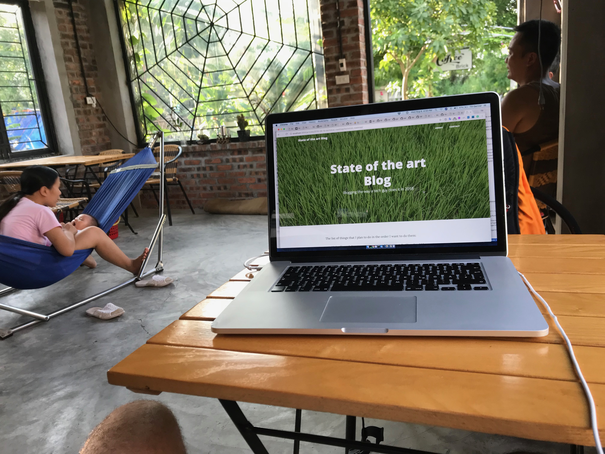

The list of things that I plan to do in the order I want to do them:
- Check the guide to set up a new blog site really works
- Make sure no broken links can get on our site. Look at this:
- Add a build date to the pages:
- A first image management: Images should be shrinked in size if bigger than a threshold value. And they should link to the full resolution image.
2018-08-09 on the go
- Integrated the Google fonts to be downloaded from the same source, so the site runs entirely offline. Used this resource
2018-08-08 in a coffee shop in Tam Coc
- Start building checks to ensure that content cannot break the blog. Start with
- Every article must contain a title, date, template
- …or fill those fields with default and produce warnings.
- Structured the pages in portions easier to handle: default is composed of header, main and footer.
- Added pages as templates and build a simple About and Contact page.
- Pages can now reside in sub directories just next to their images.
- Added a sitemap at http://localhost:3000/sitemap.xml
- Added Google tracking
